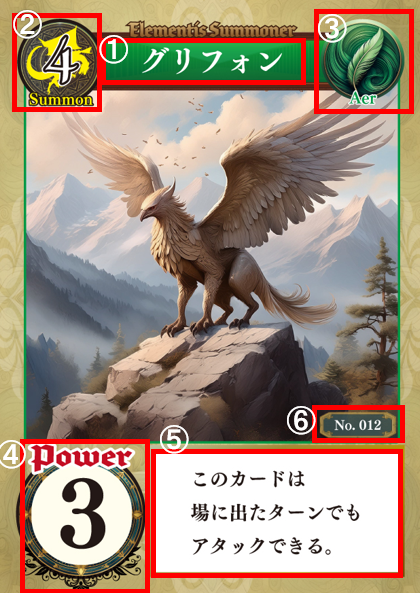
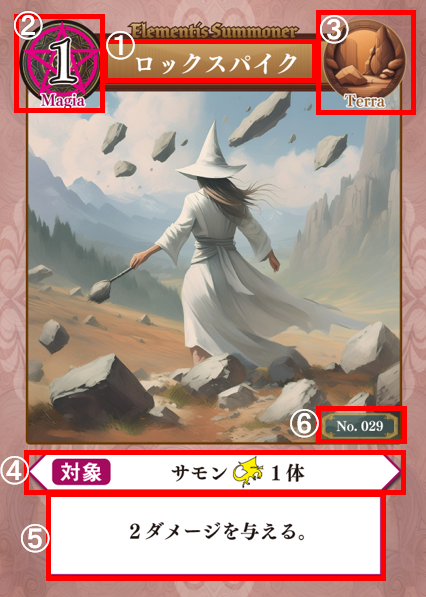
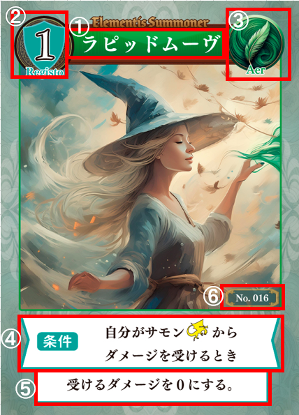
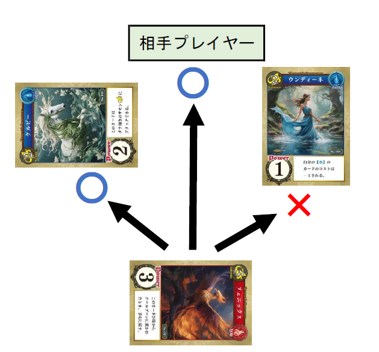
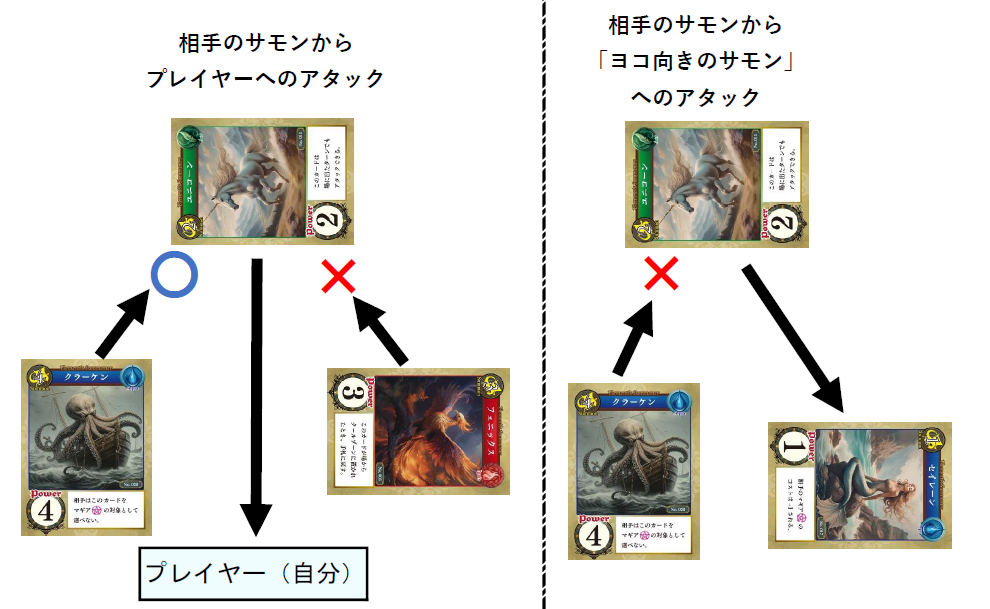
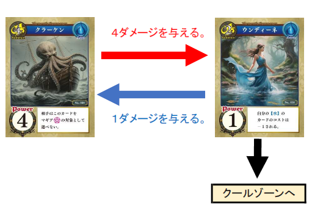

SUMMON
サモン
- カード名
- コスト及び種類
- 属性
- パワー
- 能力
- カードナンバー
HOW TO PLAY
プレイしたサモンを置くところです。
※「プレイ」とは、カードを手札から使用することです。
カードをプレイするためのコストとして、 手札のカードを裏向きに伏せて置くところです。
倒されたサモンと、プレイしたマギアや レジストを置くところです。
プレイ前のカードです。 相手から見えないように手に持ちます。
対戦では、自分の前にカードを配置します。 コストゾーンはカードを裏向きに並べ、 クールゾーンは表向きに重ねて置きます。


使用前のカードを持つ場所です。
プレイしたサモンを置く場所です。
コストとして支払ったカードを置く場所です。
倒されたサモンや使用後のカードを置く場所です。
カードにはサモン・マギア・レジスト の3種類があります。



自分のターンごとに1枚だけ プレイできます。
自分のターンに何枚でも プレイできます。
相手のターン中、条件を満たしたときに プレイできます。
手札にあるカードは、 コストを支払うことでプレイできます。
コストの支払いはプレイごとに行います。 手札からコストの数値と同じ枚数のカードを選び、 コストゾーンに裏向きで伏せて置きます。
例：コスト3のカードをプレイする場合は、 手札から3枚を選んでコストゾーンに置きます。
自分の場のタテ向きのサモンを ヨコ向きにすることで、次の対象にアタックできます。
タテ向きの相手サモンにはアタックできません。

相手のサモンから自分のプレイヤーへのアタックは、 タテ向きの自分のサモンをヨコ向きにすることで ブロックできます。
サモンへのアタックはブロックできません。

アタックしたサモンのパワーに等しいダメージを 相手プレイヤーに与えます。
アタックしたサモンとブロックしたサモンで バトルを行います。 相手プレイヤーにはダメージを与えられません。
アタックしたサモンとアタックを受けたサモンで バトルを行います。
お互いのサモンは、パワーに等しいダメージを バトル相手のサモンに与えます。
パワー以上のダメージを受けたサモンは、 クールゾーンに置かれます。

「プレイヤーにアタックしたとき」の処理が すべて終了したときに決まります。
「バトル開始時」の処理が すべて終了したときに決まります。
マギアやレジストの効果欄に 赤文字で書かれている内容は、 「カードが持つルール」です。
カードの効果が無くされても、 そのルールは無くなりません。
対戦するゲーム形式を決定します。 ゲーム形式の詳細は 第9章を参照してください。
最大3回の対戦を行い、 先に2勝したプレイヤーが勝者となります。
任意の方法でライフポイントを決定します。 各形式の推奨ライフポイントは第9章に記載しています。
ゲーム形式に従ってデッキを作成します。 10枚のカードを対戦に使用します。
デッキのカード10枚すべてを手札に持って 対戦を開始します。
勝利条件を満たすまで、 先攻と後攻が交互にターンを行います。
カードのプレイやサモンのアタックを 自由な順番で行います。
行動例：カード①のプレイ → サモン①のアタック → カード②のプレイ → サモン②のアタック → ターン終了の宣言
相手のサモン1体から自分へのアタックを、 タテ向きのサモン1体でブロックできます。
条件を満たしたときにプレイできます。 レジストの効果を行った後、 条件を満たしていれば続けて別のレジストを プレイすることもできます。
サモンのアタックやマギアの効果で 相手にダメージを与え、 相手のライフポイントを0にした プレイヤーの勝利となります。
対戦中に同じ局面 （場・クールゾーン・ライフポイント）が繰り返され、 対戦が進行不可能となった場合は、 後攻プレイヤーの勝利となります。
すべてのセット （Basic、Folklore、Mythology） から使用するセットを決めます。 複数のセットを使用しても遊べます。
各プレイヤーは同じ種類のセットを使用します。 （同一セットが2セット必要）
好きなカード10枚を選び、デッキとします。 デッキ以外から好きなカード3枚を選び、 サイドデッキとします。
サイドデッキのカードは、 対戦と対戦の間にデッキのカードと 入れ替えることができます。
同じ名前のカードはデッキに 1枚しか入れられません。
すべてのセット （Basic、Folklore、Mythology） から1つを選んで使用します。
各プレイヤーは同じ種類のセットを使用します。 （同一セットが2セット必要）
5
すべてのセット （Basic、Folklore、Mythology） から好きなセットを使用します。
使用するセットの数で対応人数が変わります。 同じ種類のセットを2つ以上使用しても遊べます。
5
サイドデッキのカードは、 対戦と対戦の間にデッキのカードと 入れ替えることができます。
同じ名前のカードを複数枚 デッキに入れることができます。
1セット32枚での遊び方です。
5
サイドデッキのカードは、 対戦と対戦の間にデッキのカードと 入れ替えることができます。